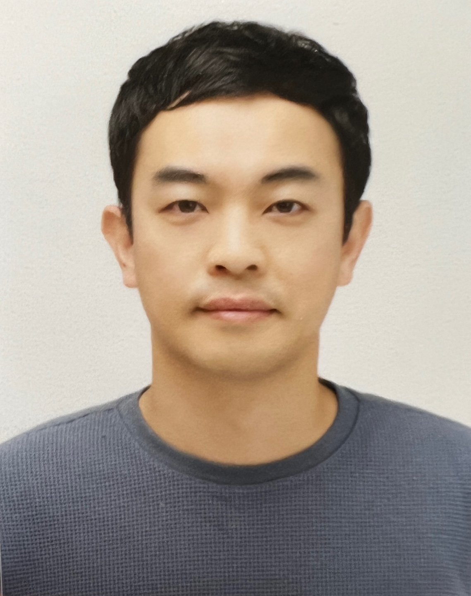

임채석
AI, 자율주행, 블록체인, 금융공학, LLM 기반 MVP 개발 등을 폭넓게 경험하고 이를 융합할 줄 아는 기획자이자 개발자

Profile
하드웨어, 펌웨어, 임베디드 제어, 컴퓨터비전, 블록체인, 생성형 AI 및 LLM 기반 서비스 개발까지 폭넓은 기술 영역을 경험했습니다.
자동차 부품사의 양산 개발 환경에서 제품 개발 전 주기를 경험했고, 이후 스타트업 CTO 및 프리랜서 개발자로 활동하며 빠른 MVP 설계와 구현, 새로운 기술의 실서비스 적용을 이어왔습니다. 최근에는 LLM과 협업하여 AI 에듀테크, 금융공학 전략 생성 시스템, 숙박업 맞춤형 AI 챗봇 SaaS를 설계·개발했습니다.
Core Competencies
기술 역량
업무 강점
- 개념 정의부터 구현·검증·운영까지 이어가는 제품 개발 경험
- 실환경 제약을 고려해 성능, 안정성, 비용을 함께 설계하는 실행력
- 하드웨어와 소프트웨어를 함께 이해하는 시스템 관점
- AI, 교육, 금융, 생활 도메인을 연결해 서비스로 완성하는 융합형 사고
Professional Experience
프리랜서 개발자
2022년부터 프리랜서 개발자로 활동하며 에듀테크 플랫폼 TankBattle.js, 금융공학 플랫폼 PolyTrader, LLM SaaS 서비스 JCHAT 등을 설계·개발했습니다. 기획, 아키텍처 설계, 구현, 검증까지 전 과정을 직접 수행하며 AI, 교육, 금융, SaaS 도메인을 실제 서비스로 구현했습니다.
펄스나인㈜ · 부대표 / CTO
AI 인플루언서 캐릭터 개발 플랫폼 MVP를 설계·개발했으며, 해당 사업은 2020년 TIPS에 선정되었습니다. 기술 기획, 프로토타이핑, 개발 총괄 역할을 수행했습니다.
아이아네트웍스㈜ · CTO
갤러리 및 경매소의 미술품 거래·소유 이력을 관리하는 블록체인 기반 등기 플랫폼 개발을 총괄했습니다. 이더리움 기반 DApp 및 스마트컨트랙트 설계·구현을 담당했습니다.
에이치엘만도㈜ · 대리 / 팀원
독일 Fraunhofer와 LKAS 운전자지원 시스템 공동개발 국책과제를 진행했습니다. 전방카메라 기반 표지판 및 선행차량 인식 모델 개발에 참여했습니다.
에이치엘홀딩스㈜ · 대리 / 팀원
ESC ECU 하드웨어 설계 지원, ABS ECU failsafe 설계 및 구현, LKAS AI 모델 개발을 수행했습니다. 약 20개 이상 차종 variation에 대응한 양산 개발 경험을 쌓았습니다.
에스씨에스프로㈜ · 사원 / 팀원
마스터카드 비접촉 스마트 단말기 NFC 하드웨어 설계 보조 업무를 수행했습니다.
Education
성균관대학교 전기전자컴퓨터공학부
학사 · 2000.03 ~ 2005.08
성균관대학교 일반대학원 전기전자공학
석사 · 2005.08 ~ 2008.08
자기소개서
저는 서로 다른 기술과 경험을 연결해 새로운 결과물을 만들어내는 데 강점을 가진 개발자입니다.
초기 커리어에서는 자동차 전장 및 자율주행 관련 소프트웨어 개발을 수행했습니다. ESC, ABS, LKAS와 같은 차량 시스템 개발에 참여하며 안전성과 신뢰성이 중요한 산업에서 개발한다는 것이 무엇인지 배웠습니다. 특히 LKAS 프로젝트에서는 전방카메라 기반 표지판 인식 및 선행차량 인식 알고리즘 개발을 담당하며, 연구 단계의 아이디어가 실제 양산 제품으로 이어지는 과정을 경험했습니다.
이후에는 스타트업 환경에서 CTO 역할을 수행하며 더 빠르고 넓은 방식의 개발을 경험했습니다. AI 인플루언서 캐릭터 플랫폼, 블록체인 기반 미술품 등기 시스템 등 새로운 시장과 기술이 만나는 영역에서 기획, 아키텍처, 구현을 함께 고민했습니다. 이 과정에서 단순히 주어진 기능을 만드는 개발자가 아니라, 서비스의 목적과 사용자 가치, 비즈니스 구조까지 함께 이해하는 개발자로 성장했습니다.
2022년 이후에는 프리랜서 및 개인 프로젝트를 통해 LLM과의 협업 개발 방식을 적극적으로 실험해왔습니다. AI 에듀테크 플랫폼, Polymarket 거래전략 생성·검증 시스템, 제주 숙박업 맞춤형 AI 챗봇 JCHAT 등을 설계하고 구현하며, AI를 단순한 도구가 아니라 개발 생산성과 문제 해결 범위를 확장하는 파트너로 활용했습니다.
저의 커리어는 한 분야에만 머무르지 않았습니다. 자동차 소프트웨어, AI, 블록체인, 금융공학, 생성형 아트, SaaS까지 다양한 영역을 거쳐왔습니다. 이 경험들은 겉으로는 흩어져 보일 수 있지만, 제게는 복잡한 문제를 구조화하고 새로운 기술을 빠르게 흡수해 실제 결과물로 만드는 기반이 되었습니다.
앞으로도 저는 변화하는 기술 환경 속에서 학습을 멈추지 않고, 실질적인 제품과 서비스로 가치를 증명하는 개발자가 되고자 합니다. 안정적인 개발 경험과 새로운 기술을 향한 실행력을 함께 갖춘 사람으로서, 조직의 기술적 도전과 제품 성장에 기여하겠습니다.
그외 특이사항
AI / Generative Art 활동
AI 및 생성형 아트를 활용한 창작·전시·판매 경험
AI 및 generative art를 활용해 작품을 창작했으며, 아트바젤 홍콩 출품, 중국·스페인·대한민국 경매소 출품, 업비트 및 크립토닷컴 등 주요 암호화폐 거래소에서 독점 판매 시즌을 진행했습니다. 기술과 창작, 커뮤니티, 시장을 연결하는 경험을 통해 새로운 서비스 아이디어를 구체화하는 감각을 확장했습니다.